Infraestructura de Experimentación
algunos ejemplos
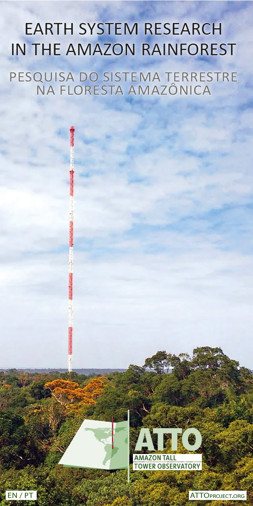
The Marcell Experimental Forest
El experimento es una colaboración entre el Servicio Forestal de los Estados Unidos y el Laboratorio Nacional Oak Ridge del Departamento de Energía,
Cuenta con 10 cámaras de vidrio abiertas. Cada uno tiene 10 m de altura, 12 mde diámetro
Diseñado para controlar la temperatura y los niveles de CO 2 , para imitar lo que sucedería con las turberas boreales en varios escenarios de calentamiento global. Se ensaya desde ningún cambio hasta un aumento muy realista de 2°C, a 4°C, e incluso a unos aterradores 7°C o más.
Across the Boreal Forest, Scientists Are Tracking Warming’s Toll - Inside Climate News
El Experimento Aspen FACE
Free-Air Carbon Dioxide Enrichment
Es un estudio multidisciplinar para evaluar los efectos del aumento de los niveles de ozono troposférico y dióxido de carbono en la estructura y función de los ecosistemas forestales del norte.
Dispone de doce anillos de 30 m en los que se pueden controlar las concentraciones de dióxido de carbono y ozono troposférico.
El diseño permite evaluar los efectos de estos gases solos y combinados en muchos atributos del ecosistema, como el crecimiento, el desarrollo de las hojas, las características de las raíces y el carbono del suelo. Al no haber confinamiento, no se produce ningún cambio significativo en el entorno natural, aparte de la elevación de las concentraciones de los gases traza añadidos.
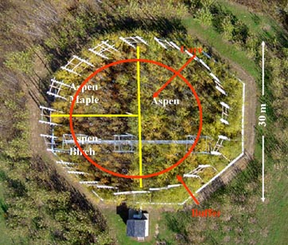
Agricultura Sostenible del Rancho Russell
Es una instalación única de 300 acres cerca del campus de UC Davis dedicada a investigar la agricultura de regadío y de secano en un clima mediterráneo.
La investigación se centra en experimentos de campo a escala de producción, en un esfuerzo por producir conocimientos que sean relevantes para los agricultores, los asesores agrícolas y los profesionales de la política.
Evalua los resultados agronómicos, económicos y medioambientales de diversas técnicas de gestión agrícola.
About Russell Ranch | Agricultural Sustainability Institute (ucdavis.edu)
Basque Research and Technology Alliance
Cuantificar el efecto del pastoreo rotacional regenerativo en diferentes servicios ecosistémicos edáficos (producción de hierba, almacenamiento de carbono, regulación del flujo de agua, reciclaje de nutrientes y biodiversidad microbiana),
Estudio a medio plazo comparando dos sistemas de pastoreo diferentes: Pastoreo regenerativo rotacional (PRR) basado en cargas ganaderas puntuales altas y periodos de descanso suficientes frente a pastoreo rotacional convencional (PRC) basado en cargas ganaderas más bajas y periodos de descanso más cortos, en los que los animales vuelven con mayor frecuencia a la zona de pastoreo.
Ecotrón iDiv
Es una plataforma de investigación conjunta del Centro Alemán de Investigación Integrativa de la Biodiversidad (iDiv) Halle-Jena-Leipzig y el Centro Helmholtz de Investigación Medioambiental - UFZ.
La instalación de investigación cubierta alberga 24 unidades experimentales idénticas, las llamadas EcoUnits, cada una de las cuales puede contener de uno a cuatro ecosistemas independientes, separados por encima o por debajo del suelo, o ambos.
La composición faunística de estos ecosistemas puede manipularse en función del número de especies de un mismo nivel trófico (diversidad horizontal) y del número de niveles tróficos (diversidad vertical).
El principal objetivo del Ecotrón iDiv es manipular la diversidad multitrófica en redes tróficas por encima y por debajo del suelo y estudiar las consecuencias para muchas funciones del ecosistema.
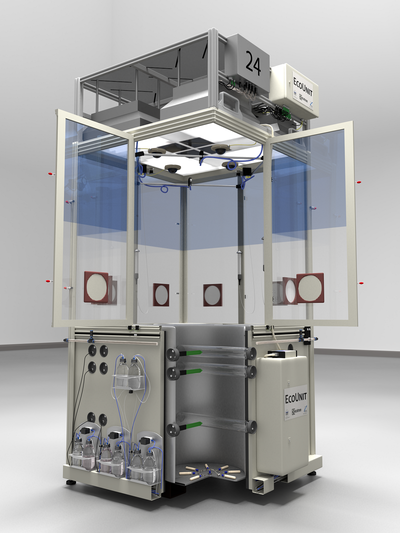
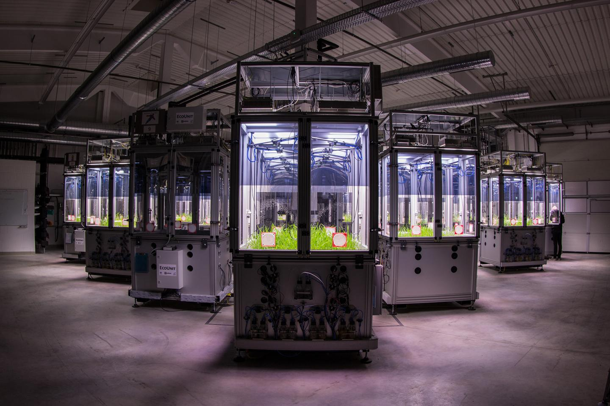
IISD Experimental Lakes Area
Contaminar deliberadamente un lago puede parecer una forma extraña de proteger el medio ambiente.
El Área de Lagos Experimentales del Instituto Internacional de Desarrollo Sostenible (IISD-ELA) en Canadá, donde se lleva a cabo la investigación, es famosa por ello.
La zona consta de 58 pequeñas masas de agua situadas en una franja de bosque boreal de cerca de 200 km2.
Durante más de 50 años, los investigadores han utilizado estos lagos como verdaderos laboratorios.
Han vertido todo tipo de contaminantes en sus aguas, incluidos fertilizantes, mercurio, ácido sulfúrico y, estrógenos.
Ubicación de la gran área experimental
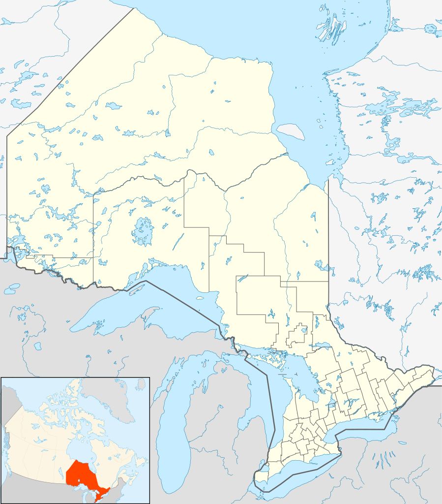
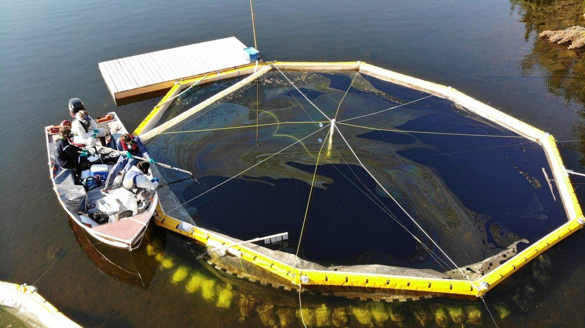
MAE mesocosmos
La ecología de animales marinos se explora mediante diversos experimentos en el laboratorio.
Por ejemplo, utiliza la acuicultura marina existente de corales adultos y larvas para comprobar los efectos de factores externos de estrés en su rendimiento ecofisiológico.
Otro proyecto estudia los efectos de la sedimentación en combinación con el aumento de la temperatura del agua del mar sobre las esponjas de aguas profundas, con el fin de conservar mejor los territorios de esponjas.
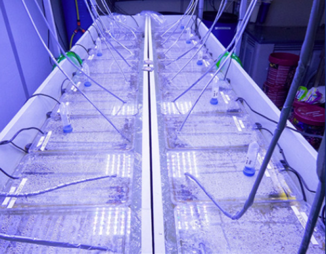
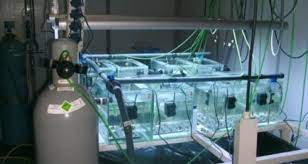
Instituto Bermuda de Ciencias Oceánicas
- Sus experimentos se preguntan:
- ¿Desarrollará la generación actual de corales mayor capacidad para hacer frente al estrés en respuesta al que experimenta?
- ¿Se adaptará mejor la próxima generación de corales a las condiciones ambientales experimentadas por sus progenitores?.
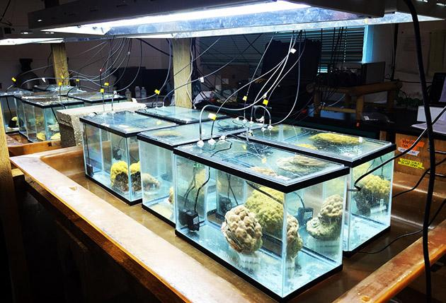
Centro de Recursos Naturales
Mediante la recopilación y el examen de pruebas de la eficacia de distintos enfoques de gestión forestal, los responsables de la toma de decisiones, los científicos y las partes interesadas pueden conocer las opciones que determinarán la sostenibilidad de estos ecosistemas críticos.
El objetivo del estudio es examinar cómo los ecosistemas sostenibles pueden tener en cuenta tanto el bienestar del entorno forestal como el de las comunidades humanas
T3 Watershed Experiment | Olympic Natural Resources Center (washington.edu)
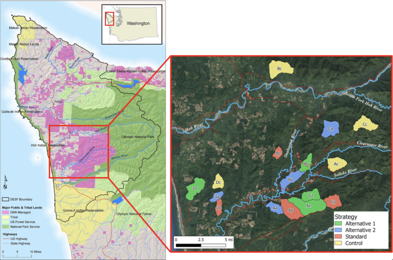
¿Experimentación con animales?
¿Qué alternativas hay a esto?
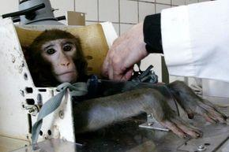
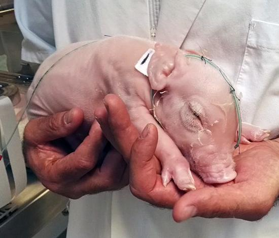
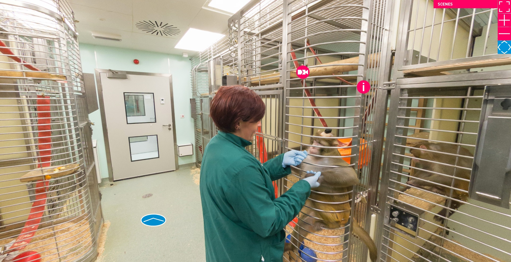
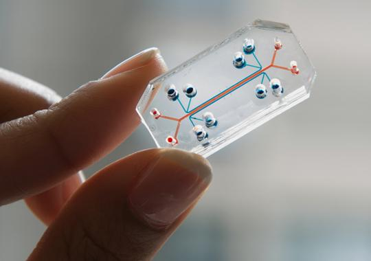
Órgano-en-un-chip
Investigadores del Instituto Wyss y un equipo multidisciplinar de colaboradores han diseñado microchips que recapitulan la microarquitectura y las funciones de órganos humanos vivos, como el pulmón, el intestino, el riñón, la piel, la médula ósea y la barrera hematoencefálica.